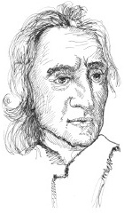

İlk önde gelen İngiliz empirist ve modern zamanların en önemli siyasi filozoflardan biri olan John Locke (1632-1704) İngiltere, Wrington’da 1632’de doğdu. Oxford’ta eğitim alan Locke, zamanının en büyük felsefi, bilimsel ve siyasi akımlarının birçoğuna bağlandı. İngiliz Kraliyet Topluluğu’nun (en ünlü üyesi Sir Isaac Newton olan bilimsel bir grup) kurucu üyelerindendi ve Kral II. Charles ve onun Katolik kardeşi James’e karşı Protestan muhalefetinde önemli bir rol oynadı.

Locke’un en önemli felsefe çalışması İnsanın Anlama Yetisi Üzerine Bir Deneme (1690) adlı eseridir. Locke insan doğduğunda zihninin tabula rasa (boş levha) durumunda olduğunu öne sürer. Tüm bilgimiz sonradan yaşadığımız tecrübelerden kaynaklanmaktadır. Locke’un psikoloji anlayışında, fikirler (ideler) dünyaya yönelik duyusal tecrübelerimizden ileri gelir. Fikirleri karşılaştırabiliriz, karmaşık fikirleri yaratmak üzere onları birleştirebiliriz ve daha özel olanlardan daha genel fikirler çıkarabiliriz. Ancak fiziki duyularımız yegâne başlangıç noktamızdır ve bu neyi bilmeyi umabileceğimize dair önemli sınırlamalar getirir. Bu yüzden Locke, ‘şey’lerin gerçek doğasının temelini oluşturan unsurları bilme kabiliyetimize karşı şüpheci bir yaklaşım sergiler.
Siyasi düşüncede Locke, ‘toplumsal sözleşme’ kuramının geliştirilmesinde önemli bir rol oynadı. Locke’a göre insanoğlu başlangıçta hiçbir kanunun olmadığı ve fiziki gücün otoritenin tek temeli olduğu bir “doğal durum”da idiler. Ancak, belli doğal haklarımızı başta güvenlik temini olmak üzere çeşitli güvenceler karşılığında bir hükümete veya başka bir otoriteye devrederek bir sosyal sözleşme yarattık. Locke’un önemli katkısı adil bir toplumsal sözleşmenin belli özelliklere sahip olması gerekliliği görüşüydü. Bu görüşe göre sözleşme yurttaşlarının yaşama hakkına, özgürlük hakkına ve mülkiyet hakkına saygı duymalıydı. Locke eğer bu haklar ihlal edilirse hükmeden otoriteye karşı, kral dahi olsa ayaklanma hakkımız olduğunu savundu.
EK BİLGİLER:
1. Locke krala ve kardeşine karşı bir Protestan muhalefetine dahil olması nedeniyle İngiltere’den Hollanda’ya kaçtı. 1688’deki Şanlı Devrim sırasında İngiltere’ye geri döndü.
2. Locke Amerikan kolonilerinin Bağımsızlık Bildirgesi’nin fikir babasıydı.
3. Locke’un toplumsal sözleşmeye dayalı hükümet kuramı gibi fikirleri Amerikan Devrimi’nin liderlerini etkiledi.